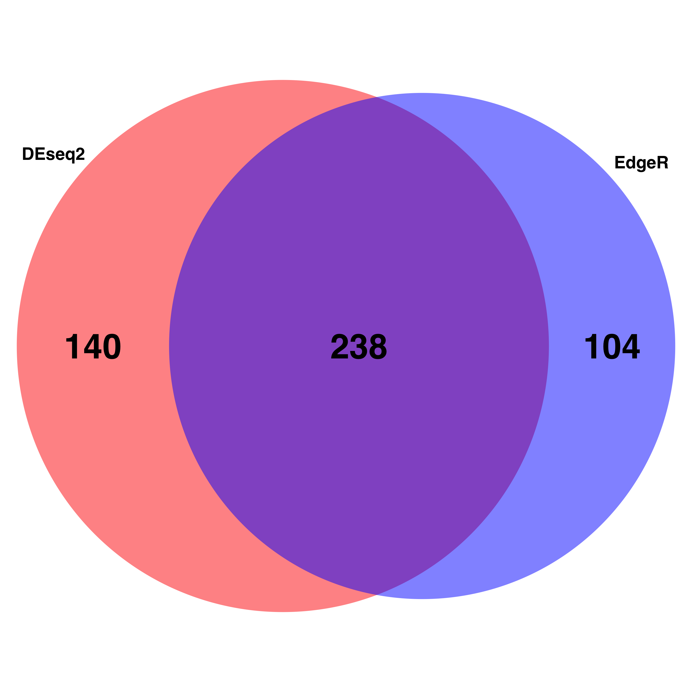

Last updated: 2022-11-01
Checks: 6 1
Knit directory:
locust-phase-transition-RNAseq/
This reproducible R Markdown analysis was created with workflowr (version 1.7.0). The Checks tab describes the reproducibility checks that were applied when the results were created. The Past versions tab lists the development history.
Great! Since the R Markdown file has been committed to the Git repository, you know the exact version of the code that produced these results.
Great job! The global environment was empty. Objects defined in the global environment can affect the analysis in your R Markdown file in unknown ways. For reproduciblity it’s best to always run the code in an empty environment.
The command set.seed(20221025) was run prior to running
the code in the R Markdown file. Setting a seed ensures that any results
that rely on randomness, e.g. subsampling or permutations, are
reproducible.
Great job! Recording the operating system, R version, and package versions is critical for reproducibility.
Nice! There were no cached chunks for this analysis, so you can be confident that you successfully produced the results during this run.
Using absolute paths to the files within your workflowr project makes it difficult for you and others to run your code on a different machine. Change the absolute path(s) below to the suggested relative path(s) to make your code more reproducible.
| absolute | relative |
|---|---|
| /Users/alphamanae/Documents/GitHub/locust-phase-transition-RNAseq/data/piceifrons/edgeR_SPICE_HEAD | data/piceifrons/edgeR_SPICE_HEAD |
| /Users/alphamanae/Documents/GitHub/locust-phase-transition-RNAseq/data/piceifrons/DEseq2_SPICE_HEAD | data/piceifrons/DEseq2_SPICE_HEAD |
Great! You are using Git for version control. Tracking code development and connecting the code version to the results is critical for reproducibility.
The results in this page were generated with repository version 447a2e1. See the Past versions tab to see a history of the changes made to the R Markdown and HTML files.
Note that you need to be careful to ensure that all relevant files for
the analysis have been committed to Git prior to generating the results
(you can use wflow_publish or
wflow_git_commit). workflowr only checks the R Markdown
file, but you know if there are other scripts or data files that it
depends on. Below is the status of the Git repository when the results
were generated:
Ignored files:
Ignored: .DS_Store
Ignored: analysis/.DS_Store
Ignored: data/.DS_Store
Ignored: data/americana/.DS_Store
Ignored: data/americana/STAR_counts_4thcol/.DS_Store
Ignored: data/cancellata/.DS_Store
Ignored: data/cancellata/STAR_counts_4thcol/.DS_Store
Ignored: data/cubense/.DS_Store
Ignored: data/cubense/STAR_counts_4thcol/.DS_Store
Ignored: data/gregaria/.DS_Store
Ignored: data/gregaria/STAR_counts_4thcol/.DS_Store
Ignored: data/gregaria/list/.DS_Store
Ignored: data/metadata/.DS_Store
Ignored: data/nitens/.DS_Store
Ignored: data/nitens/STAR_counts_4thcol/.DS_Store
Ignored: data/piceifrons/.DS_Store
Ignored: data/piceifrons/DEseq2_SPICE_HEAD/.DS_Store
Ignored: data/piceifrons/STAR_counts_4thcol/.DS_Store
Ignored: data/piceifrons/edgeR_SPICE_HEAD/.DS_Store
Ignored: data/piceifrons/list/.DS_Store
Untracked files:
Untracked: data/piceifrons/DE-genes_strict_[SPICE_HEAD]_[238_genes].txt
Untracked: data/piceifrons/DEseq2_SPICE_HEAD/DE-genes_[SPICE_HEAD_DEseq2]_[378_genes].txt
Untracked: data/piceifrons/edgeR_SPICE_HEAD/DE-genes_[SPICE_HEAD_edgeR]_[342_genes].txt
Unstaged changes:
Deleted: data/piceifrons/venn_diagramm.png
Note that any generated files, e.g. HTML, png, CSS, etc., are not included in this status report because it is ok for generated content to have uncommitted changes.
These are the previous versions of the repository in which changes were
made to the R Markdown (analysis/deg-overlap.Rmd) and HTML
(docs/deg-overlap.html) files. If you’ve configured a
remote Git repository (see ?wflow_git_remote), click on the
hyperlinks in the table below to view the files as they were in that
past version.
| File | Version | Author | Date | Message |
|---|---|---|---|---|
| Rmd | 447a2e1 | MaevaTecher | 2022-11-01 | workflowr::wflow_publish("../../analysis/deg-overlap.Rmd") |
| html | d1a755e | MaevaTecher | 2022-11-01 | Build site. |
| Rmd | 4743cf7 | MaevaTecher | 2022-11-01 | workflowr::wflow_publish("../../analysis/deg-overlap.Rmd") |
| html | 71b199d | MaevaTecher | 2022-11-01 | Build site. |
| Rmd | d997db0 | MaevaTecher | 2022-11-01 | workflowr::wflow_publish("../../analysis/deg-overlap.Rmd") |
| html | 1fa8b99 | MaevaTecher | 2022-11-01 | Build site. |
| html | 40deb86 | MaevaTecher | 2022-11-01 | Build site. |
| html | 83b00b8 | MaevaTecher | 2022-11-01 | Build site. |
| Rmd | c546525 | MaevaTecher | 2022-11-01 | workflowr::wflow_publish(c("../../analysis/deg-overlap.Rmd", |
| html | 05f27e6 | MaevaTecher | 2022-11-01 | Build site. |
| Rmd | 25a2ba3 | MaevaTecher | 2022-11-01 | workflowr::wflow_publish(c("../../analysis/_site.yml", "../../analysis/edgeR-workflow.Rmd", |
#(install first from CRAN or Bioconductor)
library("knitr")
library("rmdformats")
library("tidyverse")
library("DT") # for making interactive search table
library("plotly") # for interactive plots
library("ggthemes") # for theme_calc
library("reshape2")
library("DESeq2")
library("data.table")
library("apeglm")
library("ggpubr")
library("ggplot2")
library("ggrepel")
library("EnhancedVolcano")
library("SARTools")
library("pheatmap")
library("VennDiagram")
## Global options
options(max.print="10000")
knitr::opts_chunk$set(
echo = TRUE,
message = FALSE,
warning = FALSE,
cache = FALSE,
comment = FALSE,
prompt = FALSE,
tidy = TRUE
)
opts_knit$set(width=75)projectName <- "SPICE_HEAD" # name of the project
author <- "Maeva TECHER" # author of the statistical analysis/report
# Import output from edgeR/DEseq2
workDir_edgeR <- "/Users/alphamanae/Documents/GitHub/locust-phase-transition-RNAseq/data/piceifrons/edgeR_SPICE_HEAD"
setwd(workDir_edgeR)
table_edgeR <- read.table("tables/CrowdedvsIsolated.complete.txt", header = TRUE)
workDir_DEseq2 <- "/Users/alphamanae/Documents/GitHub/locust-phase-transition-RNAseq/data/piceifrons/DEseq2_SPICE_HEAD"
setwd(workDir_DEseq2)
table_DEseq2 <- read.table("tables/CrowdedvsIsolated.complete.txt", header = TRUE)
tresh_logfold <- 1
tresh_padj <- 0.05
# Select DE genes
table_edgeR_DE <- subset(table_edgeR, table_edgeR$padj <= tresh_padj & (table_edgeR$log2FoldChange >=
tresh_logfold | table_edgeR$log2FoldChange <= -tresh_logfold), select = Id:trended.dispersion)
table_DEseq2_DE <- subset(table_DEseq2, table_DEseq2$padj <= tresh_padj & (table_DEseq2$log2FoldChange >=
tresh_logfold | table_DEseq2$log2FoldChange <= -tresh_logfold), select = Id:maxCooks)
# Write output file
setwd(workDir_edgeR)
Filename <- paste("DE-genes_[", projectName, "_edgeR]_[", length(table_edgeR_DE[[1]]),
"_genes].txt", sep = "")
write.table(table_edgeR_DE, file = Filename, row.names = FALSE, quote = FALSE, sep = "\t")
setwd(workDir_DEseq2)
Filename <- paste("DE-genes_[", projectName, "_DEseq2]_[", length(table_DEseq2_DE[[1]]),
"_genes].txt", sep = "")
write.table(table_DEseq2_DE, file = Filename, row.names = FALSE, quote = FALSE, sep = "\t")table_edgeR_DE$Coder <- "edgeR"
table_edgeR_DE <- table_edgeR_DE[c("Coder", "Id")]
table_DEseq2_DE$Coder <- "DEseq2"
table_DEseq2_DE <- table_DEseq2_DE[c("Coder", "Id")]
table5 <- rbind(table_edgeR_DE, table_DEseq2_DE)
dupsBetweenGroups <- function (df, idcol) {
datacols <- setdiff(names(df), idcol)
sortorder <- do.call(order, df)
df <- df[sortorder,]
dupWithin <- duplicated(df)
dupBetween = rep(NA, nrow(df))
dupBetween[!dupWithin] <- duplicated(df[!dupWithin,datacols])
dupBetween[!dupWithin] <- duplicated(df[!dupWithin,datacols], fromLast=TRUE) | dupBetween[!dupWithin]
goodIdx <- !is.na(dupBetween)
goodVals <- c(NA, dupBetween[goodIdx])
fillIdx <- cumsum(goodIdx)+1
dupBetween <- goodVals[fillIdx]
dupBetween[sortorder] <- dupBetween
return(dupBetween)}
dupRows <- dupsBetweenGroups(table5, "Coder")
table5 <- cbind(table5, dup=dupRows)
table5 <- subset(table5, Coder=="edgeR" & dup==TRUE, select=-Coder)
setwd('..')
Filename <- paste("DE-genes_strict_[", projectName, "]_[", length(table5[[1]]), "_genes].txt", sep = "")
write.table(table5, file = Filename, row.names = FALSE, quote = FALSE, sep="\t")
#Print result statistics
cat("Amongst a total of", length(table_edgeR[[1]]), "genes,
DEseq2 found", length(table_DEseq2_DE[[1]]), "differentially expressed genes.
EdgeR found", length(table_edgeR_DE[[1]]), "differentially expressed genes.
A total of", length(table5[[1]]), "genes was found by both programs.")FALSE Amongst a total of 28731 genes,
FALSE DEseq2 found 378 differentially expressed genes.
FALSE EdgeR found 342 differentially expressed genes.
FALSE A total of 238 genes was found by both programs.test_a_vector <- as.vector(unlist(table_DEseq2_DE$Id))
test_b_vector <- as.vector(unlist(table_edgeR_DE$Id))
library("RColorBrewer")
myCol <- brewer.pal(3, "Pastel2")
venn.plot <- venn.diagram(
x = list(test_a_vector, test_b_vector),
category.names = c("DEseq2" , "EdgeR"),
filename = 'venn_diagramm.png',
output=TRUE,
# Output features
imagetype="png" ,
resolution = 300,
compression = "lzw",
# Circles
lwd = 2,
lty = 'blank',
fill = c("red", "blue"),
# Numbers
cex = 3,
fontface = "bold",
fontfamily = "sans",
# Set names
cat.cex = 1.5,
cat.fontface = "bold",
cat.default.pos = "outer",
cat.fontfamily = "sans"
)
sessionInfo()FALSE R version 4.2.1 (2022-06-23)
FALSE Platform: x86_64-apple-darwin17.0 (64-bit)
FALSE Running under: macOS Big Sur ... 10.16
FALSE
FALSE Matrix products: default
FALSE BLAS: /Library/Frameworks/R.framework/Versions/4.2/Resources/lib/libRblas.0.dylib
FALSE LAPACK: /Library/Frameworks/R.framework/Versions/4.2/Resources/lib/libRlapack.dylib
FALSE
FALSE locale:
FALSE [1] en_US.UTF-8/en_US.UTF-8/en_US.UTF-8/C/en_US.UTF-8/en_US.UTF-8
FALSE
FALSE attached base packages:
FALSE [1] grid stats4 stats graphics grDevices utils datasets
FALSE [8] methods base
FALSE
FALSE other attached packages:
FALSE [1] RColorBrewer_1.1-3 VennDiagram_1.7.3
FALSE [3] futile.logger_1.4.3 pheatmap_1.0.12
FALSE [5] SARTools_1.8.1 kableExtra_1.3.4
FALSE [7] edgeR_3.38.4 limma_3.52.4
FALSE [9] ashr_2.2-54 EnhancedVolcano_1.14.0
FALSE [11] ggrepel_0.9.1 ggpubr_0.4.0
FALSE [13] apeglm_1.18.0 data.table_1.14.4
FALSE [15] DESeq2_1.36.0 SummarizedExperiment_1.26.1
FALSE [17] Biobase_2.56.0 MatrixGenerics_1.8.1
FALSE [19] matrixStats_0.62.0 GenomicRanges_1.48.0
FALSE [21] GenomeInfoDb_1.32.4 IRanges_2.31.2
FALSE [23] S4Vectors_0.34.0 BiocGenerics_0.42.0
FALSE [25] reshape2_1.4.4 ggthemes_4.2.4
FALSE [27] plotly_4.10.0 DT_0.26
FALSE [29] forcats_0.5.2 stringr_1.4.1
FALSE [31] dplyr_1.0.10 purrr_0.3.5
FALSE [33] readr_2.1.3 tidyr_1.2.1
FALSE [35] tibble_3.1.8 ggplot2_3.3.6
FALSE [37] tidyverse_1.3.2 rmdformats_1.0.4
FALSE [39] knitr_1.40
FALSE
FALSE loaded via a namespace (and not attached):
FALSE [1] readxl_1.4.1 backports_1.4.1 workflowr_1.7.0
FALSE [4] systemfonts_1.0.4 plyr_1.8.7 lazyeval_0.2.2
FALSE [7] splines_4.2.1 BiocParallel_1.30.4 digest_0.6.30
FALSE [10] invgamma_1.1 htmltools_0.5.3 SQUAREM_2021.1
FALSE [13] fansi_1.0.3 magrittr_2.0.3 memoise_2.0.1
FALSE [16] googlesheets4_1.0.1 tzdb_0.3.0 Biostrings_2.64.1
FALSE [19] annotate_1.74.0 modelr_0.1.9 svglite_2.1.0
FALSE [22] bdsmatrix_1.3-6 colorspace_2.0-3 blob_1.2.3
FALSE [25] rvest_1.0.3 haven_2.5.1 xfun_0.34
FALSE [28] crayon_1.5.2 RCurl_1.98-1.9 jsonlite_1.8.3
FALSE [31] genefilter_1.78.0 survival_3.4-0 glue_1.6.2
FALSE [34] gtable_0.3.1 gargle_1.2.1 zlibbioc_1.42.0
FALSE [37] XVector_0.36.0 webshot_0.5.4 DelayedArray_0.22.0
FALSE [40] car_3.1-1 abind_1.4-5 scales_1.2.1
FALSE [43] futile.options_1.0.1 mvtnorm_1.1-3 GGally_2.1.2
FALSE [46] DBI_1.1.3 rstatix_0.7.0 Rcpp_1.0.9
FALSE [49] viridisLite_0.4.1 xtable_1.8-4 emdbook_1.3.12
FALSE [52] bit_4.0.4 truncnorm_1.0-8 htmlwidgets_1.5.4
FALSE [55] httr_1.4.4 ellipsis_0.3.2 reshape_0.8.9
FALSE [58] pkgconfig_2.0.3 XML_3.99-0.11 sass_0.4.2
FALSE [61] dbplyr_2.2.1 locfit_1.5-9.6 utf8_1.2.2
FALSE [64] tidyselect_1.2.0 rlang_1.0.6 later_1.3.0
FALSE [67] AnnotationDbi_1.58.0 munsell_0.5.0 cellranger_1.1.0
FALSE [70] tools_4.2.1 cachem_1.0.6 cli_3.4.1
FALSE [73] generics_0.1.3 RSQLite_2.2.18 broom_1.0.1
FALSE [76] ggdendro_0.1.23 evaluate_0.17 fastmap_1.1.0
FALSE [79] yaml_2.3.6 bit64_4.0.5 fs_1.5.2
FALSE [82] KEGGREST_1.36.3 whisker_0.4 formatR_1.12
FALSE [85] xml2_1.3.3 compiler_4.2.1 rstudioapi_0.14
FALSE [88] png_0.1-7 ggsignif_0.6.4 reprex_2.0.2
FALSE [91] geneplotter_1.74.0 bslib_0.4.0 stringi_1.7.8
FALSE [94] highr_0.9 lattice_0.20-45 Matrix_1.5-1
FALSE [97] vctrs_0.5.0 pillar_1.8.1 lifecycle_1.0.3
FALSE [100] jquerylib_0.1.4 irlba_2.3.5.1 bitops_1.0-7
FALSE [103] httpuv_1.6.6 R6_2.5.1 bookdown_0.29
FALSE [106] promises_1.2.0.1 gridExtra_2.3 codetools_0.2-18
FALSE [109] lambda.r_1.2.4 MASS_7.3-58.1 assertthat_0.2.1
FALSE [112] rprojroot_2.0.3 withr_2.5.0 GenomeInfoDbData_1.2.8
FALSE [115] parallel_4.2.1 hms_1.1.2 coda_0.19-4
FALSE [118] rmarkdown_2.17 carData_3.0-5 googledrive_2.0.0
FALSE [121] git2r_0.30.1 mixsqp_0.3-43 bbmle_1.0.25
FALSE [124] numDeriv_2016.8-1.1 lubridate_1.8.0